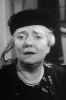
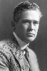

Country:United States, 62 minutes
Spoken languages:English
Genres:Horror, Sci-Fi
Director(s):William Nigh
Writer(s):Curt Siodmak, Richard Carroll
Video Codec:Unknown
Number: 45


Certification:
Storyline:
Dr. Bernard Adrian is a kindly scientist who seeks to cure a young woman's polio. He needs human spinal fluid to complete the formula for his experimental serum. Meanwhile, a vicious circus ape has broken out of its cage, and is terrorizing the townspeople. Can there be a connection?
Cast:  


Medium: Original DVD,
Comments: Part of: 100 Greatest Horror Classics
Loaned: No
Aspect ratio: Unknown